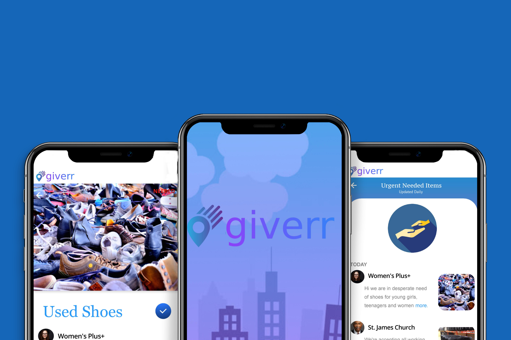

Background
When I began this project the problem was to create an app that would assist users with
decluttering their home of unwanted items, I immediately got excited about the project because I have
found myself in the situation of needing to get rid of unwanted items that I had accumulated over the
years countless times in my life and I knew that I wasn’t the only one.
I started at the root of the problem by asking why do people buy things that ultimately become
unwanted? I dived into secondary research and Instantly found that people do not only hold on to
unwanted things, but they also spend money on unwanted things due to the idea of an emotional
connection.
Having this understanding along with countless hours of research, interviews, and user testing helped
me reframe the idea to create an app that would allow users to feel good while getting rid of unwanted
items. As the lone UX professional on this project, I acted as a UX Researcher, Information
Architect, Illustrator, Visual Designer and Strategist for the project.

.jpg)
.jpg)
.jpg)


.jpg)